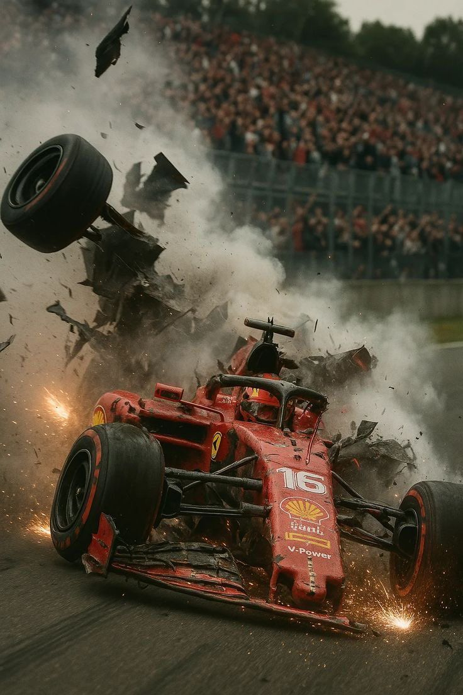
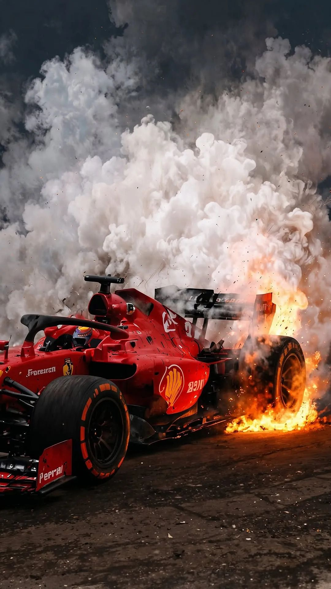
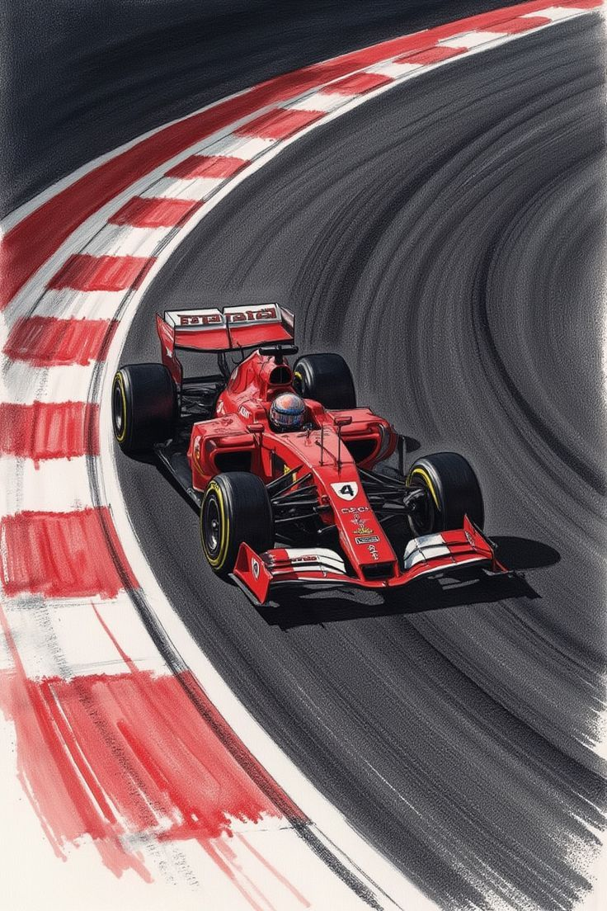

레이싱은 속도의 이야기가 아니다.
끝까지 버티는, 살아남는 자의 이야기다.
ABOUT PROJECT
레이싱의 극한, 인간의 한계
레이싱은 단순한 속도 경쟁이 아니다. 시속 300km가 넘는 속도, 5G에 달하는 압력, 최대 60도의 열기 속에서 드라이버는 매 순간 생존을 위해 싸운다.
그 안에서 인간의 집중력, 체력, 정신력은 끝까지 몰린다. 이 프로젝트는 그 극한의 환경 속에서 드라이버들이 어떻게 버티고, 어떻게 살아남는지에 대한 기록이다.
RACING · SURVIVAL · ENGINE · HEAT
SUBSCRIBE TO SURVIVAL

EXTREME FACTS
레이스카 내부의 온도는 최대 60도까지 올라가고, 콕핏 안에서 드라이버는 2시간 가까이 집중력을 유지해야 한다. 여기에 코너마다 5G 이상의 압력이 몸을 짓누른다.
WHAT HAPPENS INSIDE THE COCKPIT
- 한 경기 동안 드라이버의 몸무게는 최대 4kg까지 줄어든다.
- 심박수는 180~200을 유지하며, 마라톤 러너 수준의 체력이 필요하다.
- 목에는 20~30kg의 무게가 반복적으로 실린 것과 같은 G-포스가 가해진다.
- 몸은 한계에 도달해 있지만, 머리는 냉정하게 다음 코너와 전략을 계산해야 한다.

COOL UNDER PRESSURE

HEAT OF THE TRACK

RISING SMOKE

SURVIVAL RACE
ABOUT SURVIVAL
F1은 단순히 “누가 더 빨리 가는가”의 문제가 아니다. 시속 300km의 속도, 타이어가 비명을 지르는 코너, 그리고 언제든 사고로 이어질 수 있는 위험. 이 모든 것을 버티는 순간, 드라이버는 단순한 선수에서 “생존자”가 된다.
BECOME A SURVIVOR
레이싱의 이면을 따라가고 싶다면, 극한의 환경 속에서 버티는 인간의 이야기에 관심이 있다면 이 프로젝트와 함께해라.
REGISTERLOSE 4 KILOS IN A SINGLE RACE
레이스카 내부의 온도는 최대 60도까지 올라가고,
방열 효과가 제한적인 콕핏 안에서 드라이버는 2시간 가까이
집중력을 유지해야 한다. 숨을 고르고, 스티어링 휠을 쥐고,
브레이크와 엑셀을 반복하는 동안 몸에서는 4리터 가까운 땀이 빠져나간다.
그래서 한 경기가 끝나면 드라이버의 몸무게는 4킬로그램 정도 줄어든다.
그 무게만큼 사라진 것은 단순한 수분이 아니라,
트랙 위에서 버텨낸 시간과 집중, 그리고 생존 그 자체이다.
VICTORY STORIES
COOL UNDER PRESSURE
CALM MIND, SHARP FOCUS
F1 드라이버는 시속 300km 속에서도 머릿속은 차갑게 유지해야 한다.
공포, 흥분, 긴장감 속에서 진짜 승부를 가르는 것은
“얼마나 차분하게 결정할 수 있는가” 이다.
CALM MIND, SHARP FOCUS
THE HEAT OF THE TRACK
THE FIRE THAT DRIVES CHAMPIONS
트랙 위의 열기, 엔진과 타이어에서 올라오는 뜨거운 공기.
그 열기 속에서 숨을 쉬고, 그 열기를 파고들며 드라이버는 다시 태어난다.
THE FIRE THAT DRIVES CHAMPIONS
RISING SMOKE, RISING HEARTS
POWER AT FULL THROTTLE
엔진의 폭발음과 함께 피트 건물 사이로 연기가 피어오른다.
그 순간, 관중의 심장도 동시에 요동친다.
POWER AT FULL THROTTLE
INTERESTING THINGS ABOUT F1
F1 드라이버는 시속 300km에서도 책의 문장을 읽을 수 있을 정도로 시야가 안정적이라고 말한다. 차체와 서스펜션이 진동을 최대한 억제하도록 설계되어 있기 때문이다.
하지만 “보인다”는 것과 “판단할 수 있다”는 것은 다르다. 그 속도에서 정보를 인식하고, 동시에 다음 코너와 타이어 상태, 연료 전략까지 계산해야 한다는 점에서 F1은 인간 뇌의 한계를 시험하는 스포츠다.
· 경주 중 심박수 180~200 유지
· 전투기 조종사 수준의 G-포스를 연속으로 견뎌야 함
· 목, 코어 근육을 위한 특수 트레이닝 필수
· 전투기 조종사 수준의 G-포스를 연속으로 견뎌야 함
· 목, 코어 근육을 위한 특수 트레이닝 필수

F1 팀은 왜 수가 적을 수밖에 없는가?
MONEY
F1 한 팀을 운영하기 위한 연간 예산은 수천억 단위에 이른다.
차 한 대, 연구 개발, 장비, 물류, 인건비까지 모든 것이 비싸다.
그렇기 때문에 아무 팀이나 참가할 수 없고, 팀 수는 자연스럽게 제한된다.
“들어오는 것”보다 “버티는 것”이 더 어렵다.
JOIN YOUR SPORTS
TECHNOLOGY
F1 머신은 사실상 “바퀴 달린 전투기”에 가깝다.
공기역학, 엔진 설계, 에너지 회수 시스템, 데이터 분석 등
첨단 기술이 결합되어 있고, 이를 감당하고 유지할 수 있는 회사는
전 세계에서도 극히 제한적이다.
JOIN YOUR SPORTS
TEAM
한 팀에는 수백 명에서 천 명이 넘는 인원이 필요하다.
드라이버는 그중 단 두 명일 뿐이다.
레이스 전략, 타이어, 엔진, 섀시, 데이터, 마케팅까지.
수많은 사람들이 함께 움직일 때 비로소 한 대의 차가 트랙 위를 달릴 수 있다.
JOIN YOUR SPORTS
F1은 “들어가는 것”보다 “버티는 것”이 더 어려운 세계
돈, 기술, 사람. 이 세 가지를 동시에 갖춘 팀만이 이 무대에 설 수 있고, 그 상태를 몇 년씩 유지하는 팀만이 “전통의 팀”이 된다.
JOIN YOUR SPORTS
경기 중 요절한 선수
AYRTON SENNA
F1 역사상 가장 위대한 드라이버 중 한 명으로 불리는 아일톤 세나.
1994년 산마리노 그랑프리 도중 탬부렐로 코너에서의 사고로 세상을 떠났다.
그의 죽음은 전 세계에 큰 충격을 주었고, 그 이후 F1의 트랙 설계, 차체 강도, 헬멧, 의료 시스템까지 안전 규정은 근본적으로 바뀌게 되었다.
그의 죽음은 전 세계에 큰 충격을 주었고, 그 이후 F1의 트랙 설계, 차체 강도, 헬멧, 의료 시스템까지 안전 규정은 근본적으로 바뀌게 되었다.

경기 중 요절한 선수
ROLAND RATZENBERGER
세나와 같은 주말, 예선에서 프런트윙이 파손된 상태로 고속 주행을 이어가다
벽과 충돌해 사망한 롤란트 라첸베르거.
이 연속된 두 사고는 F1 역사상 가장 충격적인 주말로 기록되며, 현대 F1 안전 규정의 출발점이 되었다.
이 연속된 두 사고는 F1 역사상 가장 충격적인 주말로 기록되며, 현대 F1 안전 규정의 출발점이 되었다.
ABOUT RACING
SURVIVAL